Задание №1
Планиметрия
Привет! Это твой полный гид по первой задаче ЕГЭ. Здесь собрана вся база: от углов в треугольниках до окружностей. Внизу тебя ждут 121 задача для тренировки с подробными ответами. Погнали! 🚀

📖 Теория
🧠 Вспомнить формулы1. Равнобедренный треугольник
- Углы при основании равны (\(\angle A = \angle B\), если \(AC = BC\)).
- Сумма всех углов треугольника = \(180^\circ\).
- Внешний угол = сумме двух внутренних, не смежных с ним.
Лайфхак: Если дан внешний угол при основании, сначала найди внутренний (\(180^\circ - \text{внешний}\)).
2. Прямоугольный треугольник
- Медиана (\(CM\)): равна половине гипотенузы (\(CM = AM = MB\)).
- Биссектриса (\(CD\)): делит прямой угол пополам (\(45^\circ\)).
- Высота (\(CH\)): образует два маленьких прямоугольных треугольника.
3. Четырехугольники
- Сумма углов четырехугольника: Всегда равна \(360^\circ\).
- Параллелограмм: Противоположные углы равны. Сумма односторонних (прилежащих к одной стороне) углов равна \(180^\circ\).
- Ромб: Все стороны равны. Диагонали являются биссектрисами углов (делят углы пополам).
4. Площади и подобие
-
Площадь параллелограмма: \(S = a \cdot h_a\) (основание на высоту).
-
Площадь треугольника:
1) \(S = \frac{1}{2} a \cdot h_a\) (половина основания на высоту);
2) \(S = \frac{1}{2} a \cdot b \cdot \sin \gamma\) (через две стороны и угол между ними). -
Средняя линия: отсекает треугольник, площадь которого \(\frac{1}{4}\) от большого.
-
Площадь трапеции от средней линии: \(\frac{3}{4}\) от площади большого треугольника.
-
Теорема Пифагора: квадрат гипотенузы равен сумме квадратов катетов.
\(c^2 = a^2 + b^2\) -
Средняя линия треугольника: отрезок, соединяющий середины двух сторон треугольника, параллелен третьей стороне и равен её половине.
\(MN \parallel AC,\quad MN = \frac{1}{2}AC\)
5. Окружность
-
Вписанный и центральный угол:
Вписанный угол равен половине центрального угла,
опирающегося на ту же дугу.
\(\angle ACB = \frac{1}{2}\angle AOB\) -
Касательная:
Радиус, проведённый в точку касания,
перпендикулярен касательной (\(90^\circ\)).
-
Вписанный четырёхугольник:
Все вершины четырёхугольника лежат на окружности.
Сумма противоположных углов равна \(180^\circ\).
\(\angle A + \angle C = 180^\circ\) -
Описанный четырёхугольник:
Окружность касается всех четырёх сторон
четырёхугольника. Суммы противоположных сторон равны.
\(AB + CD = BC + AD\) -
Теорема синусов:
Отношение стороны треугольника к синусу
противолежащего угла равно диаметру
описанной окружности.
\(\frac{a}{\sin A} = 2R\)
6. Синус, косинус, тангенс острого угла
- Синус (\(\sin\)): отношение противолежащего катета к гипотенузе.
\(\sin A = \frac{a}{c}\) - Косинус (\(\cos\)): отношение прилежащего катета к гипотенузе.
\(\cos A = \frac{b}{c}\) - Тангенс (\(\text{tg}\)): отношение противолежащего катета к прилежащему.
\(\text{tg} A = \frac{a}{b}\) - Основное тригонометрическое тождество:
\(\sin^2 A + \cos^2 A = 1\)
Как запомнить навсегда:
Синус (Sin) — от английского See (смотреть). «Смотрим» на угол и берем противолежащий катет.
Косинус (Cos) — от слова Касается. Он «касается» угла, поэтому берем прилежащий катет.
✍️ Практика (121 задача)
Реши задачу, введи ответ в поле и нажми «Проверить».
Задача 1
В треугольнике \(ABC\) угол \(A\) равен \(41^\circ\), стороны \(AC\) и \(BC\) равны. Найдите угол \(C\). Ответ дайте в градусах.
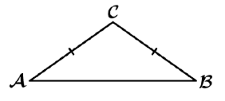
Задача 2
В треугольнике \(ABC\) угол \(B\) равен \(43^\circ\), стороны \(AC\) и \(BC\) равны. Найдите угол \(C\). Ответ дайте в градусах.
Задача 3
В треугольнике \(ABC\) угол \(C\) равен \(114^\circ\), стороны \(AC\) и \(BC\) равны. Найдите угол \(B\). Ответ дайте в градусах.
Задача 4
В треугольнике \(ABC\) угол \(C\) равен \(116^\circ\), стороны \(AC\) и \(BC\) равны. Найдите угол \(B\). Ответ дайте в градусах.
Задача 5
В треугольнике \(ABC\) стороны \(AC\) и \(BC\) равны. Внешний угол при вершине \(B\) равен \(103^\circ\). Найдите угол \(C\). Ответ дайте в градусах.
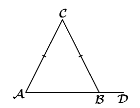
Задача 6
В треугольнике \(ABC\) стороны \(AC\) и \(BC\) равны. Внешний угол при вершине \(B\) равен \(109^\circ\). Найдите угол \(C\). Ответ дайте в градусах.
Задача 7
В треугольнике \(ABC\) стороны \(AC\) и \(BC\) равны, угол \(C\) равен \(168^\circ\), угол \(CBD\) внешний. Найдите величину угла \(CBD\). Ответ дайте в градусах.
Задача 8
В треугольнике \(ABC\) стороны \(AC\) и \(BC\) равны, угол \(C\) равен \(148^\circ\), угол \(CBD\) внешний. Найдите величину угла \(CBD\). Ответ дайте в градусах.
Задача 9
В треугольнике \(ABC\) \(CD\) – медиана, угол \(C\) равен \(90^\circ\), угол \(B\) равен \(17^\circ\). Найдите угол \(ACD\). Ответ дайте в градусах.
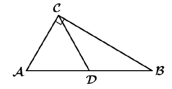
Задача 10
В треугольнике \(ABC\) \(CD\) – медиана, угол \(C = 90^\circ\), угол \(B = 31^\circ\). Найдите угол \(ACD\). Ответ дайте в градусах.
Задача 11
Острый угол \(B\) прямоугольного треугольника \(ABC\) равен \(17^\circ\). Найдите величину угла между биссектрисой \(CD\) и медианой \(CM\), проведёнными из вершины прямого угла \(C\). Ответ дайте в градусах.
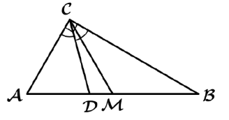
Задача 12
Острый угол \(B\) прямоугольного треугольника \(ABC\) равен \(20^\circ\). Найдите величину угла между биссектрисой \(CD\) и медианой \(CM\), проведёнными из вершины прямого угла \(C\). Ответ дайте в градусах.
Задача 13
Угол между биссектрисой и медианой прямоугольного треугольника, проведёнными из вершины прямого угла, равен \(19^\circ\). Найдите меньший угол прямоугольного треугольника. Ответ дайте в градусах.
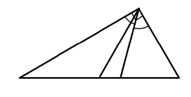
Задача 14
Угол между биссектрисой и медианой прямоугольного треугольника, проведёнными из вершины прямого угла, равен \(18^\circ\). Найдите меньший угол прямоугольного треугольника. Ответ дайте в градусах.
Задача 15
Острый угол \(B\) прямоугольного треугольника \(ABC\) равен \(19^\circ\). Найдите величину угла между высотой \(CH\) и биссектрисой \(CD\), проведёнными из вершины прямого угла \(C\). Ответ дайте в градусах.
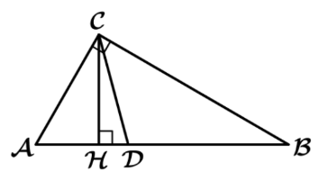
Задача 16
Острый угол \(B\) прямоугольного треугольника \(ABC\) равен \(17^\circ\). Найдите величину угла между высотой \(CH\) и биссектрисой \(CD\), проведёнными из вершины прямого угла \(C\). Ответ дайте в градусах.
Задача 17
В прямоугольном треугольнике угол между высотой и биссектрисой, проведёнными из вершины прямого угла, равен \(34^\circ\). Найдите меньший угол прямоугольного треугольника. Ответ дайте в градусах.
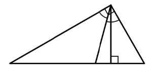
Задача 18
В прямоугольном треугольнике угол между высотой и биссектрисой, проведёнными из вершины прямого угла, равен \(23^\circ\). Найдите меньший угол прямоугольного треугольника. Ответ дайте в градусах.
Задача 19
Острые углы прямоугольного треугольника равны \(53^\circ\) и \(37^\circ\). Найдите угол между высотой и медианой, проведёнными из вершины прямого угла. Ответ дайте в градусах.
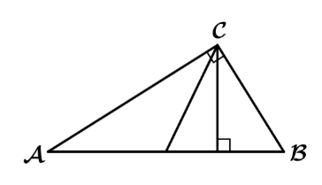
Задача 20
Острые углы прямоугольного треугольника равны \(87^\circ\) и \(3^\circ\). Найдите угол между высотой и медианой, проведёнными из вершины прямого угла. Ответ дайте в градусах.
Задача 21
Острый угол \(B\) прямоугольного треугольника \(ABC\) равен \(61^\circ\). Найдите величину угла между высотой \(CH\) и медианой \(CM\), проведёнными из вершины прямого угла \(C\). Ответ дайте в градусах.
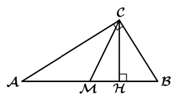
Задача 22
Острый угол \(B\) прямоугольного треугольника \(ABC\) равен \(67^\circ\). Найдите величину угла между высотой \(CH\) и медианой \(CM\), проведёнными из вершины прямого угла \(C\). Ответ дайте в градусах.
Задача 23
В треугольнике \(ABC\) угол \(C\) равен \(56^\circ\), \(AD\) – биссектриса, угол \(BAD\) равен \(24^\circ\). Найдите величину угла \(ADB\). Ответ дайте в градусах.
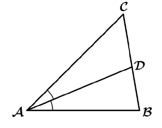
Задача 24
В треугольнике \(ABC\) угол \(C\) равен \(62^\circ\), \(AD\) – биссектриса, угол \(BAD\) равен \(19^\circ\). Найдите величину угла \(ADB\). Ответ дайте в градусах.
Задача 25
В треугольнике \(ABC\) \(AD\) – биссектриса, угол \(C\) равен \(68^\circ\), угол \(CAD\) равен \(44^\circ\). Найдите величину угла \(ABD\). Ответ дайте в градусах.
Задача 26
В треугольнике \(ABC\) \(AD\) – биссектриса, угол \(C\) равен \(105^\circ\), угол \(CAD\) равен \(7^\circ\). Найдите угол \(B\). Ответ дайте в градусах.
Задача 27
В треугольнике \(ABC\) угол \(A\) равен \(70^\circ\), углы \(B\) и \(C\) — острые, высоты \(BD\) и \(CE\) пересекаются в точке \(O\). Найдите угол \(DOE\). Ответ дайте в градусах.
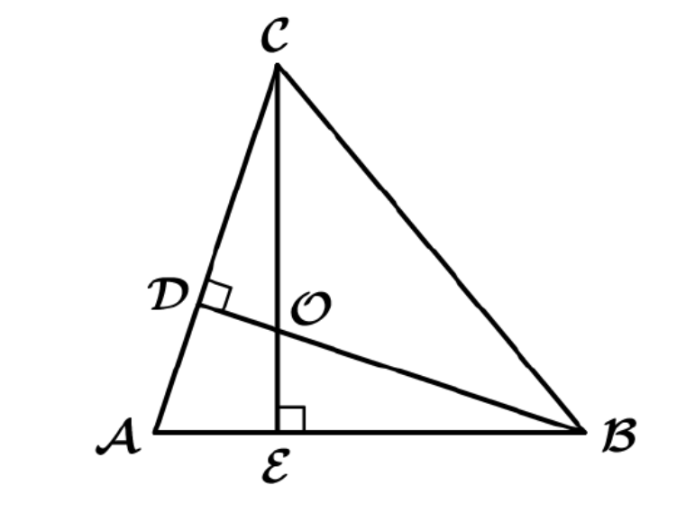
Задача 28
В остроугольном треугольнике \(ABC\) угол \(A\) равен \(62^\circ\), \(BD\) и \(CE\) — высоты, пересекающиеся в точке \(O\). Найдите угол \(DOE\). Ответ дайте в градусах.
Задача 29
В треугольнике \(ABC\) угол \(C\) равен \(66^\circ\), биссектрисы \(AD\) и \(BE\) пересекаются в точке \(O\). Найдите угол \(AOB\). Ответ дайте в градусах.
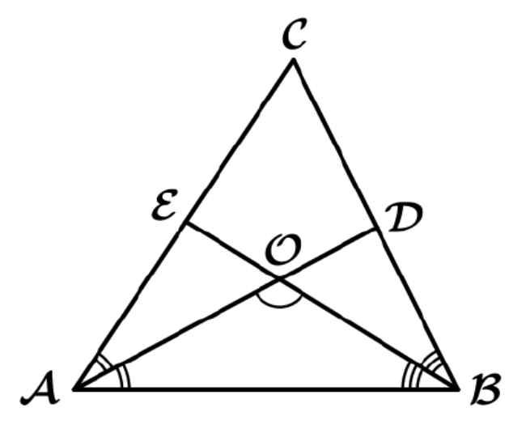
Задача 30
В треугольнике \(ABC\) угол \(C\) равен \(62^\circ\), биссектрисы \(AD\) и \(BE\) пересекаются в точке \(O\). Найдите угол \(AOB\). Ответ дайте в градусах.
Задача 31
Один угол параллелограмма больше другого на \(28^\circ\). Найдите меньший угол. Ответ дайте в градусах.
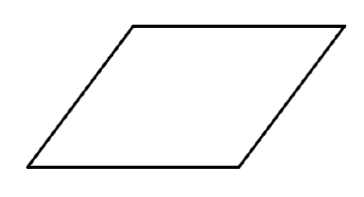
Задача 32
Один угол параллелограмма больше другого на \(40^\circ\). Найдите больший угол. Ответ дайте в градусах.
Задача 33
В ромбе \(ABCD\) угол \(BCD\) равен \(48^\circ\). Найдите угол \(DBA\). Ответ дайте в градусах.
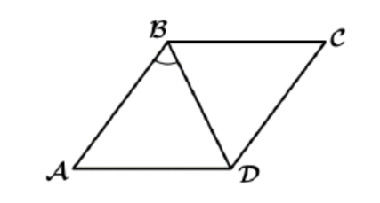
Задача 34
В ромбе \(ABCD\) угол \(CDA\) равен \(78^\circ\). Найдите угол \(ACB\). Ответ дайте в градусах.
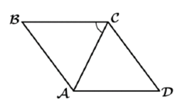
Задача 35
Стороны параллелограмма равны 9 и 15. Высота, опущенная на меньшую из этих сторон, равна 10. Найдите высоту, опущенную на большую сторону параллелограмма.
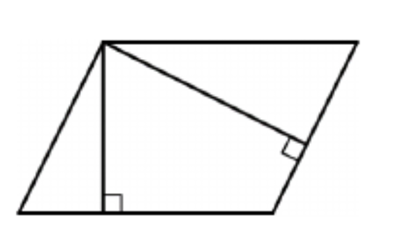
Задача 36
Стороны параллелограмма равны 12 и 15. Высота, опущенная на меньшую из этих сторон, равна 10. Найдите высоту, опущенную на большую сторону параллелограмма.
Задача 37
Площадь параллелограмма \(ABCD\) равна 92. Точка \(F\) — середина стороны \(CD\). Найдите площадь трапеции \(ABCF\).
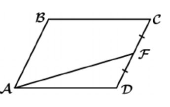
Задача 38
Площадь параллелограмма \(ABCD\) равна 132. Точка \(G\) — середина стороны \(BC\). Найдите площадь трапеции \(ABGD\).
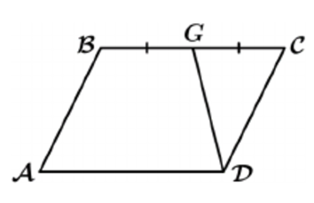
Задача 39
Площадь параллелограмма \(ABCD\) равна 142. Точка \(H\) — середина стороны \(AB\). Найдите площадь трапеции \(AHCD\).
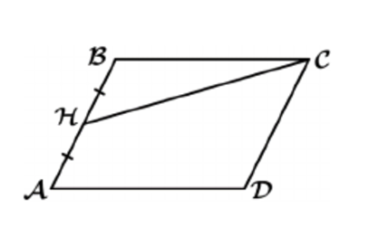
Задача 40
Площадь параллелограмма \(ABCD\) равна 146. Точка \(E\) — середина стороны \(AD\). Найдите площадь трапеции \(BCDE\).
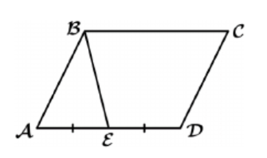
Задача 41
Две стороны треугольника равны 20 и 35. Высота, опущенная на большую из этих сторон, равна 12. Найдите высоту, опущенную на меньшую из этих сторон треугольника.
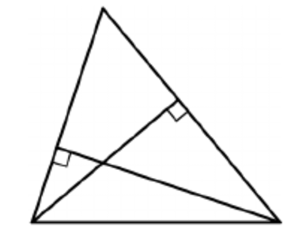
Задача 42
Две стороны треугольника равны 12 и 45. Высота, опущенная на большую из этих сторон, равна 10. Найдите высоту, опущенную на меньшую из этих сторон треугольника.
Задача 43
Угол при вершине, противолежащей основанию равнобедренного треугольника, равен \(30^\circ\). Боковая сторона треугольника равна 13. Найдите площадь этого треугольника.
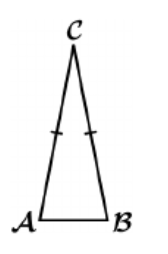
Задача 44
Угол при вершине, противолежащей основанию равнобедренного треугольника, равен \(30^\circ\). Боковая сторона треугольника равна 14. Найдите площадь этого треугольника.
Задача 45
В равностороннем треугольнике \(ABC\) высота \(CH\) равна \(47\sqrt{3}\). Найдите \(AB\).
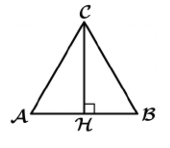
Задача 46
В равностороннем треугольнике \(ABC\) высота \(CH\) равна \(24\sqrt{3}\). Найдите \(AB\).
Задача 47
Площадь треугольника \(ABC\) равна 52, \(DE\) — средняя линия, параллельная стороне \(AB\). Найдите площадь треугольника \(CDE\).
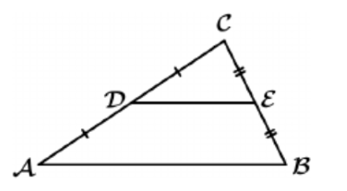
Задача 48
Площадь треугольника \(ABC\) равна 72, \(DE\) — средняя линия, параллельная стороне \(AB\). Найдите площадь треугольника \(CDE\).
Задача 49
Площадь треугольника \(ABC\) равна 32, \(DE\) — средняя линия, параллельная стороне \(AB\). Найдите площадь трапеции \(ABED\).
Задача 50
Площадь треугольника \(ABC\) равна 40, \(DE\) — средняя линия, параллельная стороне \(AB\). Найдите площадь трапеции \(ABED\).
Задача 51
В треугольнике \(ABC\) \(EF\) — средняя линия. Площадь треугольника \(BEF\) равна 6. Найдите площадь треугольника \(ABC\).
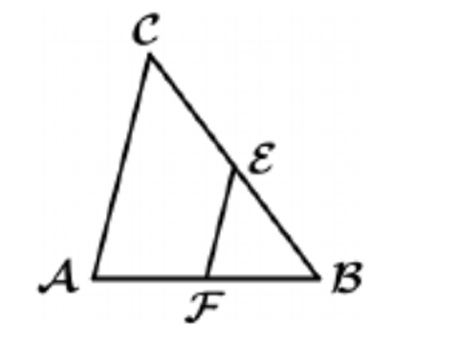
Задача 52
В треугольнике \(ABC\) \(DF\) — средняя линия. Площадь треугольника \(ADF\) равна 27. Найдите площадь треугольника \(ABC\).
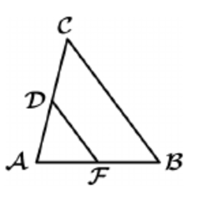
Задача 53
Основания трапеции равны 2 и 8. Найдите больший из отрезков, на которые делит среднюю линию этой трапеции одна из её диагоналей.
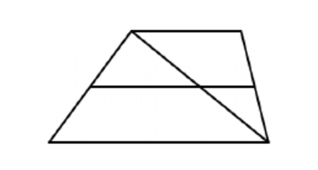
Задача 54
Основания трапеции равны 1 и 17. Найдите больший из отрезков, на которые делит среднюю линию этой трапеции одна из её диагоналей.
Задача 55
В треугольнике \(ABC\) \(AC = BC = 20\), \(AB = 12\). Найдите \(\cos A\).
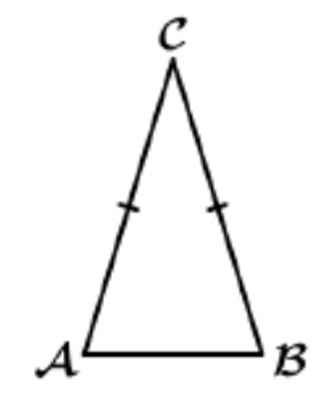
Задача 56
В треугольнике \(ABC\) \(AC = BC = 12\), \(AB = 6\). Найдите \(\cos A\).
Задача 57
В треугольнике \(ABC\) угол \(C\) равен \(90^\circ\), \(BC = 10\), \(\cos B = \frac{2}{5}\). Найдите \(AB\).
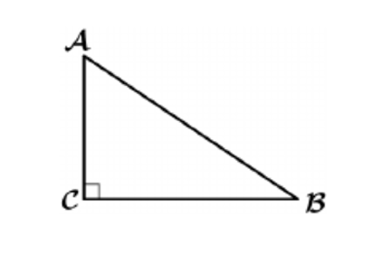
Задача 58
В треугольнике \(ABC\) угол \(C\) равен \(90^\circ\), \(BC = 18\), \(\cos B = \frac{3}{5}\). Найдите \(AB\).
Задача 59
В треугольнике \(ABC\) угол \(C\) равен \(90^\circ\), \(AB = 10\), \(AC = \sqrt{51}\). Найдите \(\sin A\).
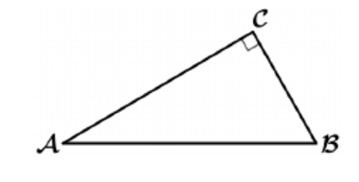
Задача 60
В треугольнике \(ABC\) угол \(C\) равен \(90^\circ\), \(AB = 40\), \(AC = 4\sqrt{51}\). Найдите \(\sin A\).
Задача 61
В треугольнике \(ABC\) угол \(C\) равен \(90^\circ\), \(AB = 5\), \(BC = 4\). Найдите \(\cos A\).
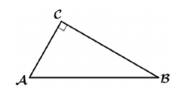
Задача 62
В треугольнике \(ABC\) угол \(C\) равен \(90^\circ\), \(AB = 6\), \(BC = 3\sqrt{3}\). Найдите \(\cos A\).
Задача 63
В треугольнике \(ABC\) угол \(C\) равен \(90^\circ\), \(BC = 8\sqrt{6}\), \(AB = 20\). Найдите \(\sin B\).
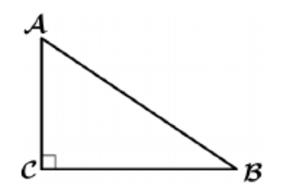
Задача 64
В треугольнике \(ABC\) угол \(C\) равен \(90^\circ\), \(BC = 12\sqrt{3}\), \(AB = 24\). Найдите \(\sin B\).
Задача 65
В треугольнике \(ABC\) угол \(C\) равен \(90^\circ\), \(\sin A = 0,6\). Найдите \(\sin B\).
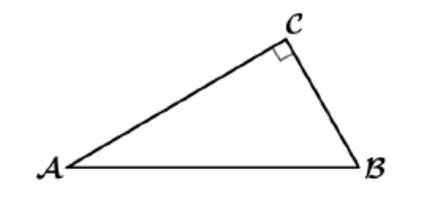
Задача 66
В треугольнике \(ABC\) угол \(C\) равен \(90^\circ\), \(AC = 24\), \(\text{tg} A = \frac{15}{8}\). Найдите \(AB\).
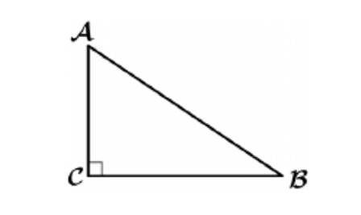
Задача 67
В треугольнике \(ABC\) угол \(C\) равен \(90^\circ\), \(AC = 6\), \(\text{tg} A = \frac{\sqrt{5}}{2}\). Найдите \(AB\).
Задача 68
В треугольнике \(ABC\) \(AC = BC\), высота \(CH\) равна 9,6, \(\cos A = \frac{7}{25}\). Найдите \(AC\).
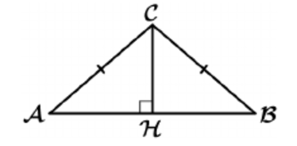
Задача 69
В треугольнике \(ABC\) \(AC = BC\), высота \(CH\) равна 19,2, \(\cos A = 0,28\). Найдите \(AC\).
Задача 70
В треугольнике \(ABC\) \(AC = BC\), высота \(CH\) равна \(2\sqrt{6}\), \(\cos A = 0,2\). Найдите \(AC\).
Задача 71
В треугольнике \(ABC\) \(AC = BC\), \(AB = 10\), высота \(AH\) равна 3. Найдите синус угла \(BAC\).
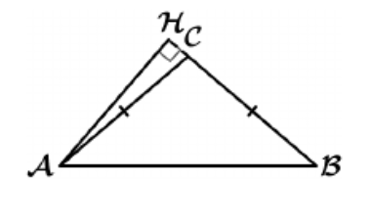
Задача 72
В треугольнике \(ABC\) \(AB = BC\), \(AC = 15\), высота \(CH\) равна 6. Найдите синус угла \(ACB\).
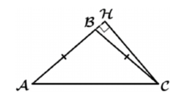
Задача 73
В треугольнике \(ABC\) \(AC = BC\), \(AB = 10\), \(AH\) — высота, \(BH = 5\). Найдите косинус угла \(BAC\).
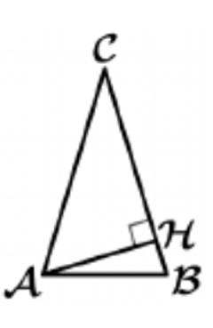
Задача 74
В треугольнике \(ABC\) \(AC = BC\), \(AB = 30\), высота \(AH\) равна 18. Найдите синус угла \(BAC\).
Задача 75
В треугольнике \(ABC\) \(AB = BC\), \(AC = 24\), высота \(CH\) равна 18. Найдите синус угла \(ACB\).
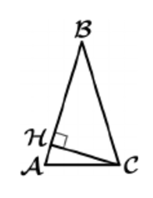
Задача 76
Найдите величину центрального угла, если он на \(40^\circ\) больше острого вписанного угла, опирающегося на ту же дугу. Ответ дайте в градусах.
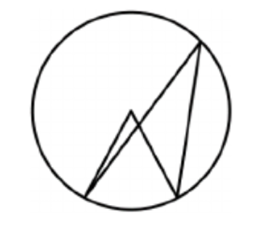
Задача 77
Найдите величину центрального угла, если он на \(39^\circ\) больше острого вписанного угла, опирающегося на ту же дугу. Ответ дайте в градусах.
Задача 78
Центральный угол на \(36^\circ\) больше острого вписанного угла, опирающегося на ту же дугу окружности. Найдите величину вписанного угла. Ответ дайте в градусах.
Задача 79
Центральный угол на \(41^\circ\) больше острого вписанного угла, опирающегося на ту же дугу окружности. Найдите величину вписанного угла. Ответ дайте в градусах.
Задача 80
Отрезки \(AC\) и \(BD\) — диаметры окружности с центром \(O\). Угол \(AOD\) равен \(130^\circ\). Найдите величину вписанного угла \(ACB\). Ответ дайте в градусах.
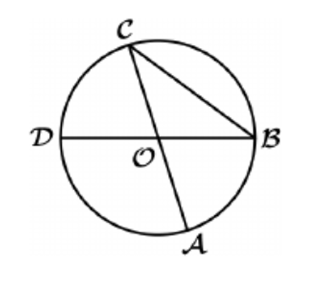
Задача 81
Отрезки \(AC\) и \(BD\) — диаметры окружности с центром \(O\). Угол \(AOD\) равен \(72^\circ\). Найдите величину вписанного угла \(ACB\). Ответ дайте в градусах.
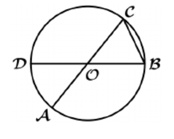
Задача 82
Отрезки \(AC\) и \(BD\) — диаметры окружности с центром \(O\). Угол \(ACB\) равен \(48^\circ\). Найдите величину угла \(AOD\). Ответ дайте в градусах.
Задача 83
Отрезки \(AC\) и \(BD\) — диаметры окружности с центром \(O\). Угол \(ACB\) равен \(39^\circ\). Найдите величину угла \(AOD\). Ответ дайте в градусах.
Задача 84
Найдите вписанный угол, опирающийся на дугу, равную \(\frac{13}{36}\) окружности. Ответ дайте в градусах.
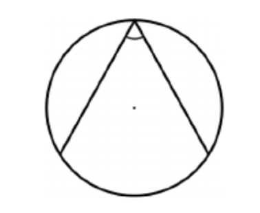
Задача 85
Найдите вписанный угол, опирающийся на дугу, равную \(\frac{5}{12}\) окружности. Ответ дайте в градусах.
Задача 86
На окружности отмечены точки \(A\), \(B\) и \(C\). Дуга окружности \(AC\), не содержащая точку \(B\), составляет \(105^\circ\). Дуга окружности \(BC\), не содержащая точку \(A\), составляет \(91^\circ\). Найдите вписанный угол \(ACB\). Ответ дайте в градусах.
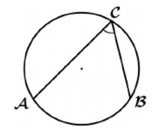
Задача 87
На окружности отмечены точки \(A\), \(B\) и \(C\). Дуга окружности \(AC\), не содержащая точку \(B\), составляет \(110^\circ\). Дуга окружности \(BC\), не содержащая точку \(A\), составляет \(88^\circ\). Найдите вписанный угол \(ACB\). Ответ дайте в градусах.
Задача 88
Угол \(ACO\) равен \(34^\circ\). Его сторона \(CA\) касается окружности с центром в точке \(O\). Отрезок \(CO\) пересекает окружность в точке \(B\) (см. рис.). Найдите градусную меру дуги \(AB\) окружности, заключённой внутри этого угла. Ответ дайте в градусах.
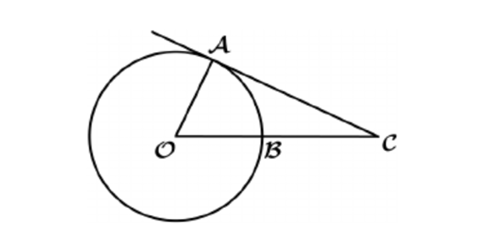
Задача 89
Угол \(ACO\) равен \(58^\circ\). Его сторона \(CA\) касается окружности с центром в точке \(O\). Отрезок \(CO\) пересекает окружность в точке \(B\) (см. рис.). Найдите градусную меру дуги \(AB\) окружности, заключённой внутри этого угла. Ответ дайте в градусах.
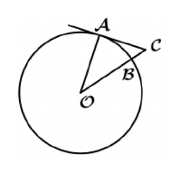
Задача 90
Найдите величину угла \(ACO\), если его сторона \(CA\) касается окружности с центром \(O\), отрезок \(CO\) пересекает окружность в точке \(B\) (см. рис.), а дуга \(AB\) окружности, заключённая внутри этого угла, равна \(54^\circ\). Ответ дайте в градусах.
Задача 91
Найдите величину угла \(ACO\), если его сторона \(CA\) касается окружности с центром \(O\), отрезок \(CO\) пересекает окружность в точке \(B\) (см. рис.), а дуга \(AB\) окружности, заключённая внутри этого угла, равна \(22^\circ\). Ответ дайте в градусах.
Задача 92
Угол \(ACO\) равен \(46^\circ\). Его сторона \(CA\) касается окружности с центром в точке \(O\). Сторона \(CO\) пересекает окружность в точках \(B\) и \(D\) (см. рис.). Найдите градусную меру дуги \(AD\) окружности, заключённой внутри этого угла. Ответ дайте в градусах.
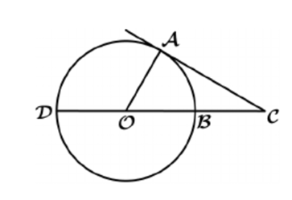
Задача 93
Угол \(ACO\) равен \(39^\circ\). Его сторона \(CA\) касается окружности с центром в точке \(O\). Сторона \(CO\) пересекает окружность в точках \(B\) и \(D\) (см. рис.). Найдите градусную меру дуги \(AD\) окружности, заключённой внутри этого угла. Ответ дайте в градусах.
Задача 94
Через концы \(A\) и \(B\) дуги окружности с центром \(O\) проведены касательные \(AC\) и \(BC\). Меньшая дуга \(AB\) равна \(40^\circ\). Найдите угол \(ACB\). Ответ дайте в градусах.
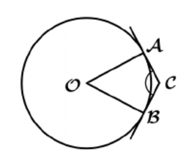
Задача 95
Через концы \(A\) и \(B\) дуги окружности с центром \(O\) проведены касательные \(AC\) и \(BC\). Меньшая дуга \(AB\) равна \(64^\circ\). Найдите угол \(ACB\). Ответ дайте в градусах.
Задача 96
Угол \(ACB\) равен \(62^\circ\). Градусная мера дуги \(AB\) окружности, не содержащей точек \(D\) и \(E\), равна \(142^\circ\). Найдите угол \(DAE\). Ответ дайте в градусах.
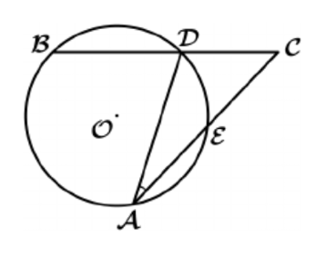
Задача 97
Угол \(ACB\) равен \(55^\circ\). Градусная мера дуги \(AB\) окружности, не содержащей точек \(D\) и \(E\), равна \(136^\circ\). Найдите угол \(DAE\). Ответ дайте в градусах.
Задача 98
В четырёхугольник \(ABCD\) вписана окружность, \(AB = 20\), \(BC = 17\) и \(AD = 5\). Найдите длину четвёртой стороны четырёхугольника.
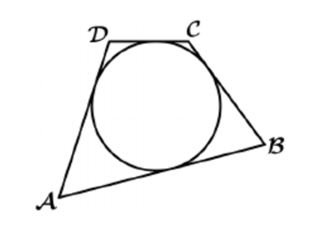
Задача 99
В четырёхугольник \(ABCD\) вписана окружность, \(AB = 19\), \(BC = 7\) и \(CD = 10\). Найдите длину четвёртой стороны четырёхугольника.
Задача 100
В четырёхугольник \(ABCD\) вписана окружность, \(AB = 24\), \(CD = 19\). Найдите периметр четырёхугольника \(ABCD\).
Задача 101
В четырёхугольник \(ABCD\) вписана окружность, \(AB = 43\), \(CD = 22\). Найдите периметр четырёхугольника \(ABCD\).
Задача 102
В четырёхугольник \(ABCD\), периметр которого равен 42, вписана окружность, \(AB = 8\). Найдите длину стороны \(CD\).
Задача 103
В четырёхугольник \(ABCD\), периметр которого равен 40, вписана окружность, \(AB = 11\). Найдите длину стороны \(CD\).
Задача 104
Периметр прямоугольной трапеции, описанной около окружности, равен 32, её большая боковая сторона равна 9. Найдите радиус окружности.
Задача 105
Периметр прямоугольной трапеции, описанной около окружности, равен 28, её большая боковая сторона равна 11. Найдите радиус окружности.
Задача 106
Боковые стороны трапеции, описанной около окружности, равны 9 и 12. Найдите среднюю линию трапеции.
Задача 107
Боковые стороны трапеции, описанной около окружности, равны 10 и 19. Найдите среднюю линию трапеции.
Задача 108
Четырёхугольник \(ABCD\) вписан в окружность. Угол \(ABD\) равен \(68^\circ\), угол \(CAD\) равен \(44^\circ\). Найдите угол \(ABC\). Ответ дайте в градусах.
Задача 109
Четырёхугольник \(ABCD\) вписан в окружность. Угол \(ABD\) равен \(73^\circ\), угол \(CAD\) равен \(38^\circ\). Найдите угол \(ABC\). Ответ дайте в градусах.
Задача 110
Четырёхугольник \(ABCD\) вписан в окружность. Угол \(ABC\) равен \(61^\circ\), угол \(CAD\) равен \(37^\circ\). Найдите угол \(ABD\). Ответ дайте в градусах.
Задача 111
Четырёхугольник \(ABCD\) вписан в окружность. Угол \(ABC\) равен \(113^\circ\), угол \(CAD\) равен \(38^\circ\). Найдите угол \(ABD\). Ответ дайте в градусах.
Задача 112
Четырёхугольник \(ABCD\) вписан в окружность. Угол \(ABC\) равен \(98^\circ\), угол \(ABD\) равен \(64^\circ\). Найдите угол \(CAD\). Ответ дайте в градусах.
Задача 113
Четырёхугольник \(ABCD\) вписан в окружность. Угол \(ABC\) равен \(96^\circ\), угол \(ABD\) равен \(48^\circ\). Найдите угол \(CAD\). Ответ дайте в градусах.
Задача 114
Четырёхугольник \(ABCD\) вписан в окружность. Угол \(BAD\) равен \(142^\circ\). Найдите угол \(BCD\). Ответ дайте в градусах.
Задача 115
Четырёхугольник \(ABCD\) вписан в окружность. Угол \(BCD\) равен \(41^\circ\). Найдите угол \(BAD\). Ответ дайте в градусах.
Задача 116
Два угла вписанного в окружность четырёхугольника равны \(63^\circ\) и \(76^\circ\). Найдите меньший из оставшихся углов. Ответ дайте в градусах.
Задача 117
Два угла вписанного в окружность четырёхугольника равны \(61^\circ\) и \(75^\circ\). Найдите меньший из оставшихся углов. Ответ дайте в градусах.
Задача 118
Два угла вписанного в окружность четырёхугольника равны \(81^\circ\) и \(83^\circ\). Найдите больший из оставшихся углов. Ответ дайте в градусах.
Задача 119
Два угла вписанного в окружность четырёхугольника равны \(77^\circ\) и \(111^\circ\). Найдите больший из оставшихся углов. Ответ дайте в градусах.
Задача 120
В треугольнике \(ABC\) сторона \(AB\) равна \(2\sqrt{3}\), угол \(C\) равен \(120^\circ\). Найдите радиус описанной около этого треугольника окружности.
Задача 121
В треугольнике \(ABC\) сторона \(AB\) равна \(8\sqrt{3}\), угол \(C\) равен \(120^\circ\). Найдите радиус описанной около этого треугольника окружности.